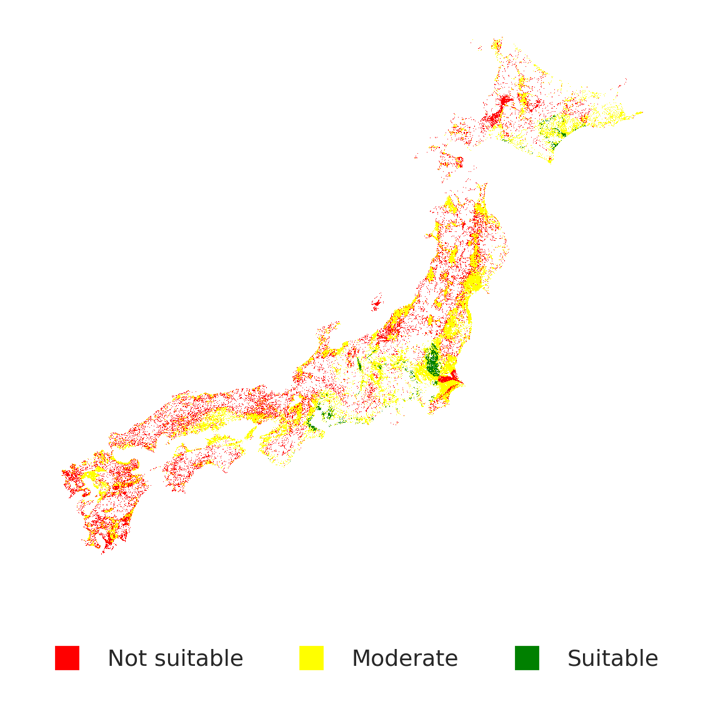
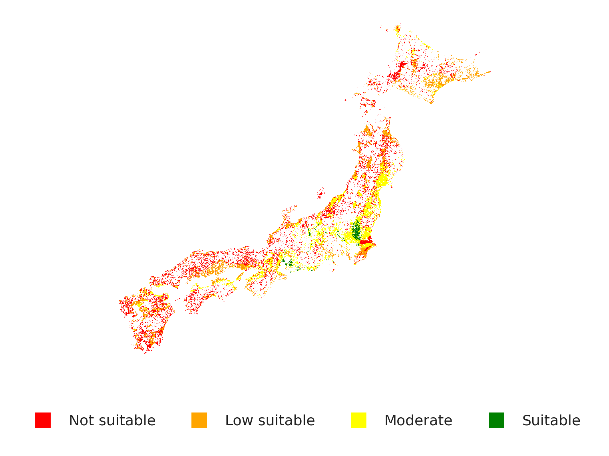

A glimpse through my AWD irrigation research and side projects.
Problem: Traditional rice irrigation consumes large amounts of water and is accountable for up to 10% of global methane emissions.
Objective: Create an AWD suitability map using satellite data and water balance modeling.
Method: Correct the overestimation of traditional water balance model by integrating biophysical constraints (soil, terrain).
Impact: Provided recommendations for sustainable irrigation for improved food security in Japan.
Satellite & field data: Daily rainfall (CHIRPS), MODIS ET, SMAP soil moisture, SoilGrids attributes, NASADEM elevation.
Processing steps: We aligned all datasets to a common 500m grid for Japan rice-growing area and aggregated into dekadal (10-day) intervals.
Classic model: “Water in vs. Water out” approach: Rainfall adds water to the soil, while evaporation and percolation remove it.
Critical gap: AWD is safe only if the soil doesn’t get too dry. If rainfall is too low relative to evapotranspiration, water deficit drops too far, crops will experience water stress and make AWD risky.
Improvement: Impose a water deficit threshold for safe AWD implementation + Integrate spatial soil/terrain layer for realistic suitability assessment.
AWD suitability by water deficit threshold:
Click a threshold below to view its suitability map:
Why choose -50mm?
-50mm threshold best aligns with the biophysical suitability layer.
Biophysical constraints:

Local soil texture, pH, drainage, moisture, and terrain slope harmonized to create a biophysical suitability layer.
Final Composite Map: Overlaying the -50mm suitability map with biophysical constraints yields the actionable AWD irrigation target areas:

Built Sentinel-2 image segmentation models (CNN, ResNet, ViT, UNET) to delineate land–water bodies.
Simulated land use change under different agricultural scenarios using Cellular Automata–Markov Chain.
Co-registered and normalized optical-SAR imagery pairs to generate post-earthquake building damage maps in Turkey using the BRIGHT building damage detection model.
Developed a Google Earth Engine app integrating AlphaEarth Embeddings for similarity-based retrieval and unsupervised change detection, facilitating landscape connectivity analysis at scale.
Developed random forest classification and genetic algorithm models to identify companion crops for specific environmental conditions, with a chatbox interface for farmers using OpenAI API.